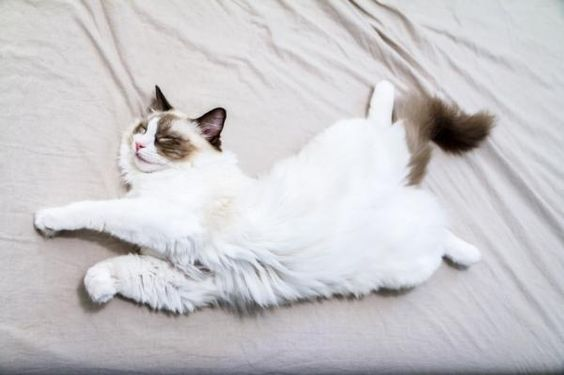
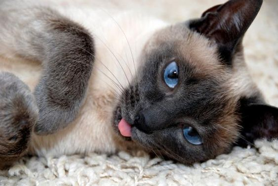
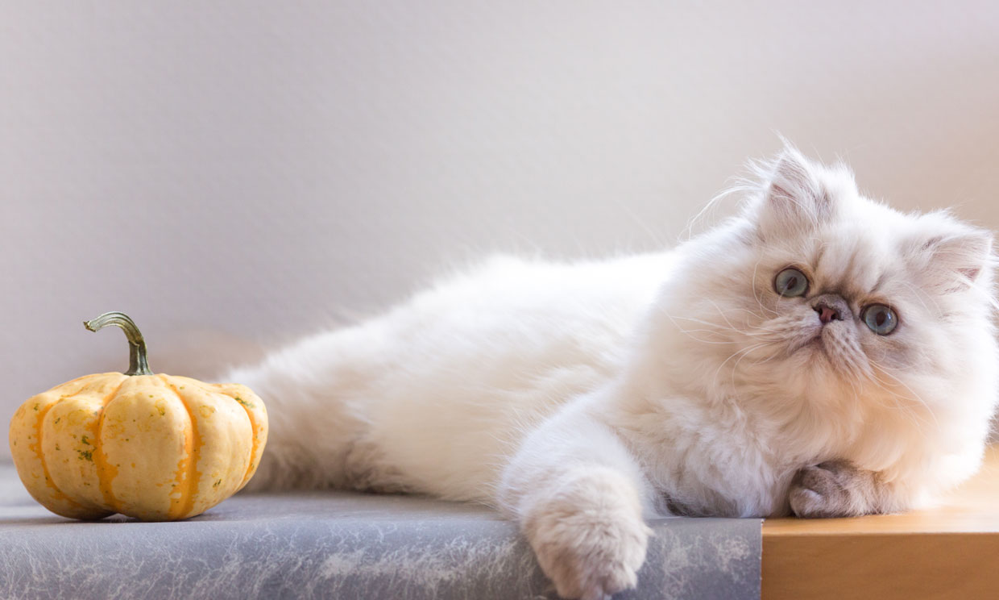
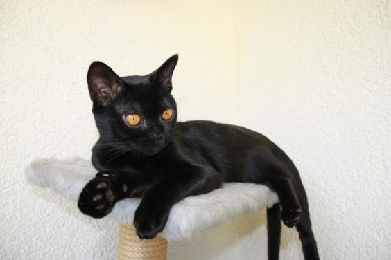
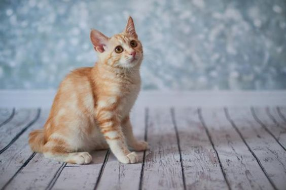
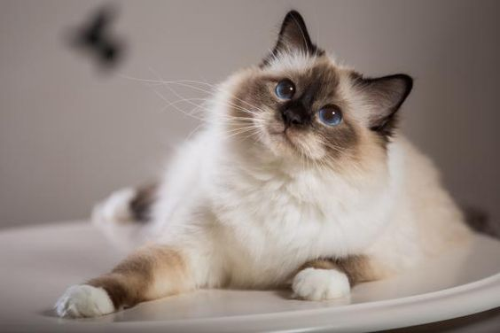
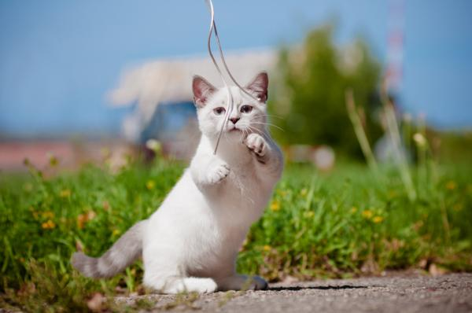

Foldo Escoces
Estos simpáticos gatos aparecieron después de una alteración en sus genes que hizo que sus orejas tuvieran una orientación hacia delante, como dobladas, de ahí su nombre "fold". Con el tiempo, la raza scottish fold o fold escocés fue cada vez más popular y hoy es día es bastante frecuente de ver. Su carácter es muy amigable, cariñoso y dependiente, por lo que, contrario a lo que se piensa, no les gusta estar mucho tiempo solos.

Sphynx
Los sphynx o esfinges no son la única raza de gato que no tiene absolutamente ningún pelo, o que tiene poquísimos, pero sí son los más conocidos. Esto hace que sean ideales para los amantes de los felinos que, por desgracia, son alérgicos a su pelaje. Uno de los factores que hace a esta raza de gato cariñosa es que al no tener un manto natural, buscan constantemente una fuente de calor y no hay nada mejor que su humano para encontrar cobijo.

Maine Coon
Estos gatos, procedentes del norte de América, son de gran tamaño y tienen unos colores y forma que durante mucho tiempo, y de manera errónea, se ha pensado que eran el resultado de una mezcla con un mapache. No obstante, aparte de que eso es biológicamente imposible, actualmente hay muchos colores dentro de esta raza felina. Además, son una raza muy sociable a la que le gusta estar en compañía, aunque simplemente sea para estar tumbado cerca de nosotros.

Ragdoll
Esta raza, conocida como Ragdoll en inglés (muñeca de trapo en español), es una de las más conocidas y es recomendada si nunca antes has tenido experiencia con felinos, ya que está demostrado que son unos de los gatos más amigables, dóciles y amables dentro del mundo de los gatos. Es común que te sigan por toda la casa, demanden tu atención y quieran estar cerca de ti todo el rato.

Siamés
Los siameses son una de las razas de gatos más antiguas que se conocen y debe ser precisamente por su larga trayectoria cerca de los humanos por la cual se han convertido en uno de los felinos más cariñosos y amables con sus dueños. Con unos penetrantes ojos azules, los siameses son los perfectos compañeros.

Persa
A pesar de su aspecto serio y elegante, los gatos persas son una de las razas más tranquilas y amigables que existen. Tremendamente popularizados en América de Norte, esta raza es ideal para gente que vive en departamentos, ya que los persas no son gatos muy enérgicos y disfrutan de estar durmiendo y aprovechando los mimos de sus humanos.

Bombay
Las supersticiones los han tachado como que los gatos negros son símbolo de mala suerte, pero lo cierto es que tener un gato Bombay en tu vida es todo un regalo. Esta raza es gentil y fiel con los humanos y desde hace décadas mucha gente los ha catalogado como una de las razas de gatos más cariñosas.

Tonkinés
Los gatos de raza tonkinés son una mezcla entre los gatos birmanos y siameses. Su particular aspecto los ha convertido en gatos muy populares entre los amantes de los felinos. Su carácter se caracteriza por ser tranquilo y mimoso, siendo ideales si quieres un gato que disfrute de tu cariño y compañía.

Americano de pelo corto
Esta es una de las razas más numerosas y comunes de tener como mascota en occidente. Su carácter es dócil y gentil con los humanos. Al contrario que otras razas, que no tienen pudor en invadir tu espacio para demandar atención, los gatos americanos de pelo corto son bastante pacientes y siempre estarán cerca de ti esperando a que les des cariño.

Birmano
Con un aspecto elegante y gentil, los gatos birmanos son una raza muy cariñosa y hogareña, capaz de aceptar a otras especies como amigos, así como niños en la casa. Su carácter es muy cariñoso y juguetón. Que no te engañen, porque todo lo que tienen de apuestos lo tienen de mimosos.

Azul Ruso
El gato Azul Ruso, es un gato admirado y apreciado en todo el mundo. Dentro de la familia de los gatos de pelo azul, junto con el gato Korat y el gato Chartreux o el gato británico, pero no deben confundirse, porque aunque tengas características semejantes, son diferentes.

Munchkin
Son una raza felina bastante nueva, que está ganando mucha popularidad por su carácter divertido y amigable pero, sobre todo, por aspecto adorable. Algunas de las características que más destacan de estos animales son sus patas cortas y su cuerpo alargado, lo que les da un aspecto de felino pequeño y simpático.